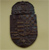

|
 | Még a nem kifejezetten baráti sajtó is enyhe csodálkozással vette át azt a földrengető jelentőségű hírt, hogy "a Tomcat néven elhíresült bloggert" (mellesleg, olvastatok már olyat, hogy "a Hobo néven elhíresült zenész", vagy "a Teddy néven elhíresült újságíró"?) 50 ezer forint bírságra ítélte a Pesti Központi Kerületi Bíróság, amiért 2007 március 15-én a szemfüles rendőrök gázspray-t találtak nála. Kettőt, mert Athináét is ő tette zsebre. Így hát kétrendbeli a szabálysértés, merthogy közbiztonságrakülönösenveszélyes. Amúgy nem lenne az, de nálam mégis az. Mert én szoktam embereket csak úgy, heccből lefújkálni.
Persze, ezt se lehetett megúszni hazudozás nélkül, a sajtó nem bír magával: egyesek azt is állították, hogy még a Demszky megdobálása miatti eljárás is folyamatban van, és majd azért is jól megbüntetnek, csak várjuk ki a végét. Sajnálattal közlöm, hogy abban már lassan egy éve felmentettek, és ekkor született az az ügyészségi határozat, ami némi hőzöngés után végül a bírói gyakorlat része lett: politikusok, közszereplők élelmiszerrel való dobálása a demokratikus vélemény-nyilvánítás egy hagyományos formája, ezért nem büntethető. Lassan már az időjárás-jelentésbe is belehazudnak valamit rólam.
Naszóval, az nem is úgy volt, tisztelt Bíróság. Az úgy volt, hogy...
Az úgy volt, hogy már idestova másfél éve rágódik a bíróság és a rendőrség, hogy vajon büntetendő-e, ha valaki, akit történetesen Polgár Tamásnak hívnak, gázspray-t cipel magával az utcán, mert hát tisztességes ember ilyet biztos nem tesz, pláne március 15-én, vérlázító, szóval a cuccot bevonták, és írtak egy papírt, hogy fizessek 50 ezer forintot, mert csak. Indoklásuk szerint közterületen legfeljebb 20 gramm töltősúlyú gázspray birtokolható. Az olyan apróságokra, mint hogy a rendőrség szerint a tömeget milliliterben mérik, vagy azt a tényleg csak a grammatikai finomságokra fogékony közönség számára érthető mellékvonalat, hogy a gázspray-t akkor is birtoklom, ha épp nincs nálam, következésképp, elég, ha én közterületen vagyok, a spray meg nem, akkor is büntethetnének, most ne feszegessük, a lényeg, hogy nem csak a rendőrség hülye, hanem a törvények megalkotói is, de hát őket is ismerjük. Indoklásképpen hozzám vágtak egy szakértői állásfoglalást, amelyben a szakértő közölte, hogy egy 40 ml-es flakon tartalma 40 gramm, indoklás: egy milliliter egyenlő egy gramm, az előadó picsa pedig fölényeskedve megkérdezte, hogy ugyan hol voltam, amikor ezt tanították fizikaórán. Nosza, itt szép lehetek, de okos nem, kértem hát bírósági tárgyalást. Ez húzódott mostanáig.
Én beszereztem a gázspray német gyártójának igazolását, amelyben a cégvezető leírta, hogy a palack tartalma 20 gramm alatt van. A bíróság pedig beszerzett három különféle szakértői véleményt, amelyek mind mást és mást írtak a palack töltősúlyáról, csak abban egyeztek, hogy 20 gramm fölött van. Volt, amelyik feltételezte, hogy az egész flakon csurig van a naftával, volt, amelyik belemérte a hajtógázt is, de az fel sem merült a T. Bíróságban, hogy ha 20 gramm fölött volna a cucc, akkor nyilván nem kapott volna kereskedelmi engedélyt.
Végül megszületett a másfél éve várt ítélet: a Tomcat néven elhíresült személy bűnös, amiért galád módon birtokolt egy olyan önvédelmi eszközt, amit normális országokban iskolás kislányok hordanak a zsebükben, de nálunk ordas veszélyt jelent a közbiztonságra. A döntés alapja pedig a vonatkozó jogszabály hiányossága. Az ugyanis csupán annyit ír, hogy "20 gramm töltőanyag-tömeg", de azt nem köti ki, hogy ez a 20 gramm a spray hatóanyaga, pedig ez az egész Európai Unió területén érvényes szabályozás. Nálunk hozzászámolandó a hajtógáz is, aminek semmi értelme, mert így egyetlen gázspray sem felel meg az előírásnak.
- Kérem, indokolják meg, miért nem veszik figyelembe a német gyártó állásfoglalását - kértem.
- Mert nekünk csak a magyar igazságügyi szakértőt szabad figyelembe vennünk.
- Akkor is, ha totál hülyeségeket ír?
- Sajnos akkor is. A bíróság nem vitathatja a szakvéleményt.
- Akkor még egy kérdésem lenne. A vonatkozó kormányrendelet, ugye, azt írja, hogy 20 gramm töltősúlyig engedélyezett a gázspray...
- Igen.
- És ez a gyártáskori állapotára, vagy arra vonatkozik, hogy mennyi van benne, amikor megtalálják nálam?
A bírónő gondterhelten lapozgatni kezdett, majd így felelt:
- Hát, eddig nem találtunk olyan esetet, amikor ezt a kérdést vizsgálták volna, ezért úgy értékeltük, hogy a gyártáskori állapot az, ami számít.
- Értem. Ezek szerint egy teljesen üres palack is közbiztonságra veszélyes eszköz?
- Igen.
- Akkor kérdeznék még. Ugye, a nyolc centiméteresnél hosszabb kés is közbiztonságra különösen veszélyes eszköznek számít...
- Igen, nyolc centiméteres pengehosszúság fölött.
- Akkor egy tizenöt centis pengéjű kés nyilvánvalóan már beletartozik ebbe.
- Igen.
- De ha én fogok egy tizenöt centis kést, és levágok a pengéjéből nyolc centit... akkor már csak hét centis a pengéje, úgy már hordhatom magamnál? Mert az Önök logikája szerint a kés akkor is tizenöt centis, ha levágom ezt a nyolc centit.
Ezen jól elgondolkodott a bírónő, majd így felelt:
- Na, látja, ezt nem tudom.
- Hogyhogy nem tudja?
- Nem tudom. De ha egy ilyen ügyet tárgyalnánk, utánanéznék.
- Lehetséges, hogy egy hét centis kés is tizenöt centisnek számít?
- Igen, lehetséges.
- Köszönöm, nincs több kérdésem.
Kár, hogy ezt a párbeszédet nem rögzítette kamera.
Nos, tehát, kedves Gyárlakók, mostantól felejtsétek el a gázspray-t, mint önvédelmi eszközt. Ne legyen ilyen a zsebetekben, mert mentek az előállítóba, és pláne ne vegyetek a gyereketeknek, mert azért még börtönbe is kerülhettek. Tanuljon meg az a gyerek jó gyorsan futni, vagy érvényesüljön a szociáldarwinizmus elve. Meg kell fékezni a lakossági erőszakot, és pont. Egyébként erről nem a bírónő tehet. Neki sajnos tényleg nincs lehetősége azt írni az ítéletbe, hogy felment engem, mert a vonatkozó jogszabály úgy szar, ahogy van.
Ha valakit érdekel, pénteken, 08:30-tól ugyanezzel a bírónővel lesz egy újabb tárgyalásom. Most a 2007 április 3-án, a Szabadság téren történt események kerülnek terítékre, azaz: büntetendő cselekmény-e egy rakás vén kommunistának odakiabálni, hogy ők egy rakás vén kommunista, vagy sem. Akit érdekel, jöjjön a PKKB Varsányi Irén utcai épületébe, a 4. emeletre pénteken, a tárgyalás mindenki számára nyilvános. Ha ebben is felmentenek, akárcsak minden más korábbi ügyben, amikor a rendőrség ilyen-olyan indokokkal elhurcolt (Nagymező utca, Lánchíd, stb.), tömbösített kártérítési pert indítok a BRFK ellen a sorozatos rendőri zaklatásért és személyi szabadságom oktalan korlátozásáért.
| | vissza a főoldalra |  |
| 1 2 3 4 5 6 7 8 9 10 | |  | | | | | | | | | | 

|
| | | | | | | | | | | | 1 2 3 4 5 6 7 8 9 10 |  |
|


túraszervező
túra-rss
mi ez?

legjobbak
legolvasottabbak
tartalomjegyzék
rss feed

AboryM
Caesar
Count Grishnackh
cscsabi
eürdüngh
Feki
GyalogKakukk
Ishukone
Kadzseszka
LACI1993
Mini
Muska
Rommel
Segi
Takezó
tommylee
vikcee
|